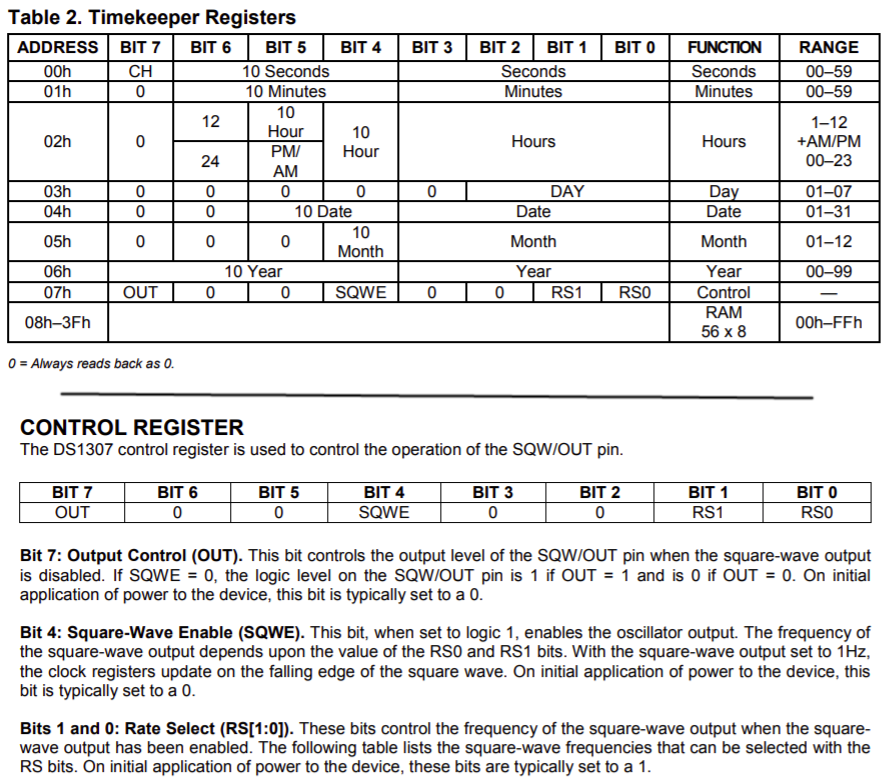
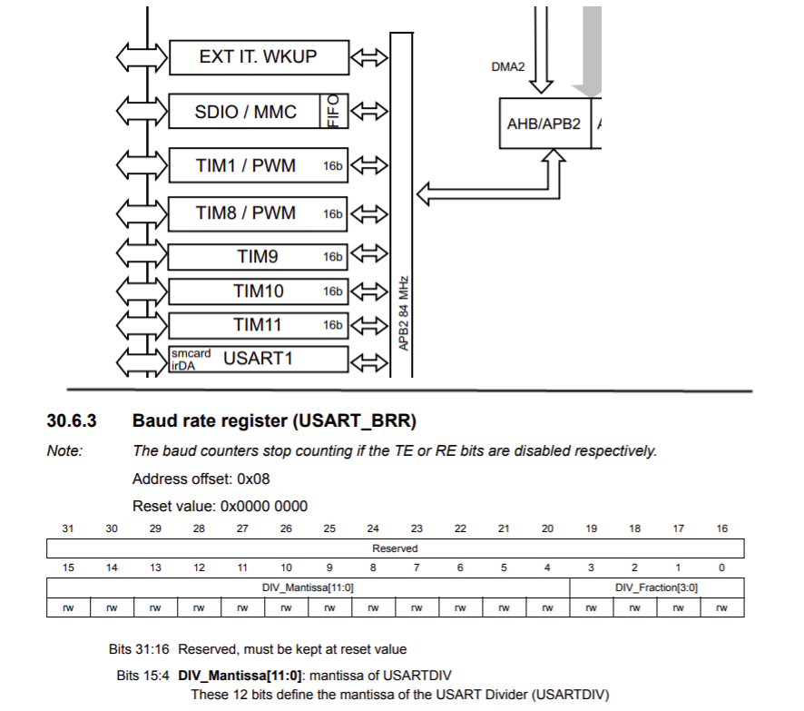
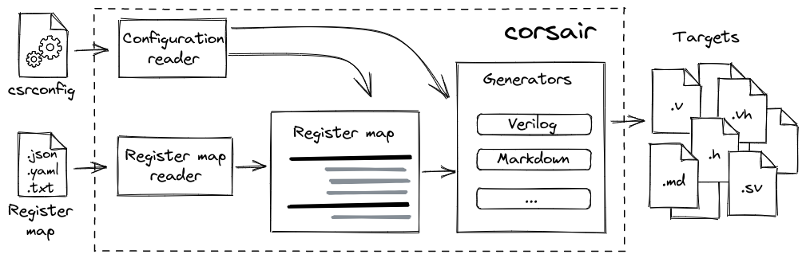

Corsair - генератор карты контрольно-статусных регистров
Posted on 03 Sep 2021 in Automation • 6 min read
Любой хоть немного сложный цифровой блок нуждается в точках контроля и управления. Наиболее часто применяемый подход к их организации - составить из управляющих полей и флагов слова (регистры, Control and Status Register - CSR), собрать их в некое общее адресное пространство (карту) и обеспечить интерфейс доступа к этой карте.
Например, ниже адресное пространство, доступное по I2C, и один из регистров внутри RTC чипа DS1307.

Другой пример - микроконтроллеры, где IP-блоки внутри имеют персональные наборы контрольно-статусных регистров и соединяются, например, по AHB и APB шинам. Ниже, типичный STM32.

Ну и в FPGA всё тоже самое - IP-блоки, шины, карты регистров.
И всё бы хорошо, пока ты программист, работающий с готовыми блоками (неважно, в кремнии или в FPGA) по документации, предоставленной разрабочиками этого блока.
Но всё меняется, когда надо самому разработать очередной кастомный блок на HDL, который сидел бы на APB/AHB/AXI-Lite/Avalon-MM шине и управлялся бы процессорным ядром. И тут-то мы и подходим к проблеме ручного описания карты регистров и её производных (документации, C-хедеров и пр.).
В чем проблема ручного составления карты CSR?
- Ручное написание RTL для реализации карты регистров это процесс довольно шаблонный и монотонный, а значит подверженный ошибкам. Однако, с другой стороны, шаблонность - это возможность автоматизации.
- Карта регистров так или иначе существует в разных форматах - в виде HDL кода, в виде таблиц в документации, в виде С хедеров и пр. И рано или поздно случаются ошибки синхронизации всех этих вещей между собой.
- Редко когда такая карта регистров одна, а значит нужно еще умножить все эти проблемы на количество разрабатываемых IP-блоков.
Все это приводит к одному выводу - нужно использовать кодогенерацию!
Когда-то я прочитал вот эту статью: Как Python и Jinja могут облегчить жизнь FPGA разработчику и всё завертелось. Именно она является основным вдохновителем текущего проекта (точнее его первых прототипов).
И что, никто еще не пытался решить эту проблему?
Конечно пытались. Скорее всего с того самого момента, когда придумали функциональные блоки, сидящие на общей шине и имеющие внутри контрольно-статусные регистры. Самый старый генератор что я сумел найти называется csrGen, написан на Perl и датируется 2002 годом!
Индустрия предлагает следующие инструменты:
- SystemRDL - целый язык для описания CSR курируемый Accelera
- IP-XACT - стандарт для описания IP-блоков и хранения относящейся к ним мета-информации, в том числе карты регистров (тут тоже без Accelera не обошлось)
Есть и "самоделки" разного уровня проработки кроме упомянутого выше csrGen:
- Register Wizard от Bitvis - программа для генерации VHDL и других артефактов из одного файла описания карты регистров
- RgGen - еще один генератор. Написан на Ruby, генерирует Verilog, SystemVerilog
- Register Tool - генератор HDL и документации на Python от проекта OpenTitan
- airhdl - веб-сервис, где можно в браузере собрать карту регистров и сгенерировать VHDL/SystemVerilog
Ну и как показывает опыт, существует конечно же куча самописных костылей с разной степенью покрытия того или иного аспекта проблемы. Причем таких небольших ad hoc утилит полагаю что подавляющее количество, т.к. с одной стороны часто в проектах хочется чего-то немного нестандартного, а готовые инструменты часто не обладают достаточной гибкостью для встраивания в процесс разработки как они есть. Или другая крайность, когда достаточного довольно простого и примитивного решения, а тратить время на преодоление порога вхождения и адаптации существующих инструментов не всегда есть возможность. Ну и банальный NIH тоже никто не отменял.
Так зачем еще один генератор?
Ну, на текущий момент казалось бы и нет смысла, но не совсем.
Вообще, вся это генераторная затея началась у меня довольно давно, когда выбора особо не было, а то что было найдено - не устраивало. Так что мой личный интерес - просто закрыть очередной пунктик. Ну а если кто-то ещё предпочтёт использовать мой генератор вместо написания своего решения, то это будет вообще успех.
Но если отбросить личные интересы, то как мне кажется работает следующее: больше генераторов, богам генераторов, и пусть выживет достойнейший.
В общем, хотелось создать такой инструмент, который:
- имел бы открытый исходный код и доступен широкому кругу лиц
- был бы написан на популярном языке (выше шанс что кто-то сделает свой инструмент на базе текущего, ну или будет контрибьютить)
- имел бы минимальный порог вхождения
- был бы легко расширяем и достаточно гибок (например, чтобы можно было генерировать свою особенную документацию по желанию)
Т.е. инструмент, который был бы фактически мета-костылем среди остальных костылей, и позволял бы закрывать не только стандартные, но и более специфичные ситуации.
CorSaiR - CSR map generator
Некоторое время назад (конец 2020) в сообществе FPGA-Systems проскочила инициатива с разработкой open-source проектов силами местных.
Я поделился своей болью по поводу генерации карт регистров. Сначала я их составлял вручную, но это быстро надоело, и я начал автоматизировать это дело. За некоторое количество лет в итоге у меня сменилось несколько поколений скриптов (которые я теперь никому в жизни не покажу). В очередной раз я решил вот теперь сделать красиво, чтобы не стыдно было поделиться с сообществом, и тут как раз подвернулась такая инициатива. В общем нашлись единомышленники и пошла разработка.
За пару месяцев были реализованы почти все хотелки и разработка затомозилась на 0.3.0+ версии. Потом код лежал нетронутым порядка полугода, однако, я успел попользоваться утилитой, собрал немного фидбека со стороны (весьма ценного) и понял, что многое можно сделать проще и лучше. Keep it simple, stupid!
Пара недель переборки и рефакторинга всего и вся, и вот она v1.0.0!

Язык - Python. Основной принцип - одно описание карты CSR на входе, любое количество необходимых артефактов на выходе. Только так можно держать в полной синхронизации RTL, документацию и хидеры.
Уже доступно:
- Разные текстовые форматы для описания карты регистров: JSON, YAML или текстовая таблица
- Генерация HDL: Verilog/VHDL модули, а также Verilog заголовочный файл и пакет SystemVerilog с параметрами и дефайнами
- Поддержка основных протоколов: APB, AXI-Lite, Avalon-MM
- Генерация документации в Markdown, AsciiDoc
- Генерация файлов для ПО: заголовочный файл C header, модуль Python
- Расширяемость: можно использовать свои генераторы файлов
- API: можно составить свой уникальный workflow, используя классы корсара
Репозиторий проекта на Github.
Установка через pip:
python3 -m pip install -U corsair
Ниже будет очень краткое изложение о том как всё работает. Если нужны детали, то README и документация на Read the Docs должны помочь.
Быстрый старт
Нужна карта регистров в одном из поддерживаемых форматов и файл конфигурации, он же скрипт сборки, csrconfig.
Самый простой способ - сгенирировать шаблоны. Например, для YAML карты регистров:
corsair -t yaml
Будут созданы два файла - csrconfig и regs.yaml.
Файл описания карты регистров состоит из списка регистров, где в каждый регистр входит список битовых полей, а в каждое битовое поле входит список перечислений (enums). Вот так например может выглядеть один регистр с одним полем в YAML:
regmap:
- name: CTRL
description: Control register
address: 8
bitfields:
- name: BAUD
description: Baudrate value
reset: 0
width: 2
lsb: 0
access: rw
hardware: o
enums:
- name: B9600
description: 9600 baud
value: 0
- name: B38400
description: 38400 baud
value: 1
- name: B115200
description: 115200 baud
value: 2
Подробнее о карте регистров в документации.
Файл конфигурации csrconfig является INI-подобным и имеет простую и плоскую структуру. Там есть секция с глобальными параметрами, которые влияют на процесс генерации в целом, и некоторое количество секций с целями генерации (targets), определяющими что и как будем генерировать.
[globcfg]
data_width = 32
address_width = 16
register_reset = sync_pos
[v_module]
path = regs.v
interface = axil
generator = Verilog
[c_header]
path = regs.h
generator = CHeader
Подробнее о файле конфигурации в документации.
Конфигурационный файл для корсара фактически является скриптом сборки. Достаточно в папке с csrconfig запустить
corsair
И все файлы будут сгенерированы. Вот так просто. Есть конечно еще пара-тройка ключей чтобы задать другую рабочую директорию или в явном виде указать путь до конфигурационного файла или карты регистров. Помощь по ключам запускается стандартно
corsair -h
Рекомендую еще полазить по папке examples - там есть образцы сгенерированных файлов, примеры работы с API, ну и примеры карт регистров конечно.
Как говорится stay tuned и перестаньте уже писать карты регистров вручную =)